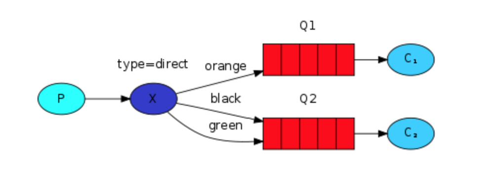
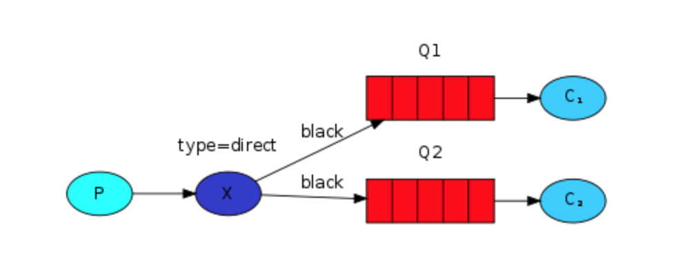
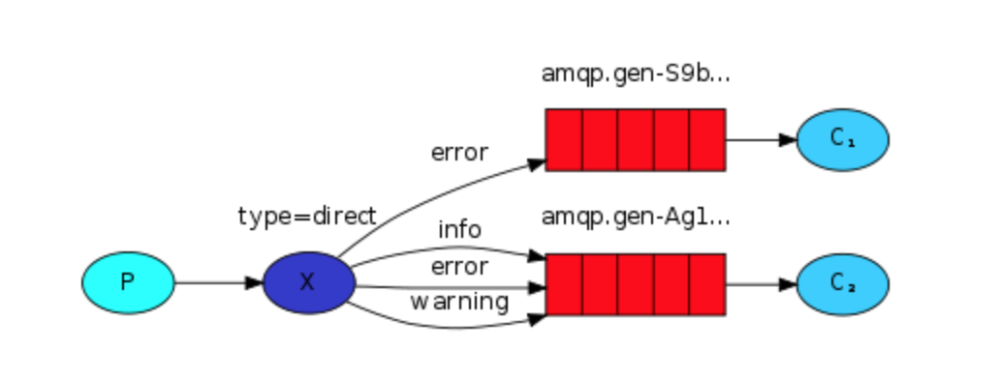

内容摘要
In this tutorial we're going to add a feature to it - we're going to make it possible to subscribe only to a subset of the messages. For example, we will be able to direct only critical error messages to the log file (to save disk space), while still being able to print all of the log messages on the console.
我们想只订阅一部分的消息。比如只把关键的错误信息保存到磁盘，其他的仍然打印在终端上。
Bindings
A binding is a relationship between an exchange and a queue. This can be simply read as: the queue is interested in messages from this exchange.
Bindings can take an extra
routing_keyparameter. To avoid the confusion with a basic_publish parameter we're going to call it a binding key. This is how we could create a binding with a key:
binding是exchange和queue之间的纽带。
为了避免和basic_publish里面的routing_key混淆，我们称之为binding key
channel.queue_bind(exchange=exchange_name,
queue=queue_name,
routing_key='black')
Direct exchange
Our logging system from the previous tutorial broadcasts all messages to all consumers. We want to extend that to allow filtering messages based on their severity. For example we may want the script which is writing log messages to the disk to only receive critical errors, and not waste disk space on warning or info log messages.
We were using a
fanoutexchange, which doesn't give us too much flexibility - it's only capable of mindless broadcasting.We will use a
directexchange instead. The routing algorithm behind a direct exchange is simple - a message goes to the queues whosebinding keyexactly matches therouting keyof the message.To illustrate that, consider the following setup:
之前的日志系统广播所有消息到消费者，我们想通过扩展来实现根据他们的严重程度来过滤消息。比如一些严重错误写到磁盘，不要让无关紧要的信息浪费磁盘。
之前的fanout exchange，并没有给我们太多的灵活性，它只是无脑的广播。
我们将使用direct exchange，它的路由算法也很简单。一个消息只传递到routing_key和binding_key一样的队列上。

In this setup, we can see the direct exchange X with two queues bound to it. The first queue is bound with binding key orange, and the second has two bindings, one with binding key black and the other one with green.
In such a setup a message published to the exchange with a routing key orange will be routed to queue Q1. Messages with a routing key of black or green will go to Q2. All other messages will be discarded.
exchange X 和两个队列绑定到了一起，第一个队列被绑定到binding_key=orange，第二个队列有两个绑定，分别是black和green。
当消息被发送到exchange，routing_key=orange的会路由到Q1，routing_key=black|green会被路由到Q2，其他的就会被丢弃。
Multiple bindings
It is perfectly legal to bind multiple queues with the same binding key. In our example we could add a binding between X and Q1 with binding key black. In that case, the direct exchange will behave like fanout and will broadcast the message to all the matching queues. A message with routing key black will be delivered to both Q1 and Q2.
使用相同的binding_key绑定多个队列是完全合法的。在我们的示例中，可以使用binding_key=black在X和Q1之间添加一个绑定。在这种情况下，direct exchange行为跟fanout一样，并将消息广播到所有匹配的队列。带有routing_key=black的消息将被发送到Q1和Q2。

示例代码

emit_log_direct.py
#!/usr/bin/env python
import pika
import sys
connection = pika.BlockingConnection(
pika.ConnectionParameters(host='localhost'))
channel = connection.channel()
channel.exchange_declare(exchange='direct_logs', exchange_type='direct')
severity = sys.argv[1] if len(sys.argv) > 1 else 'info'
message = ' '.join(sys.argv[2:]) or 'Hello World!'
channel.basic_publish(
exchange='direct_logs', routing_key=severity, body=message)
print(" [x] Sent %r:%r" % (severity, message))
connection.close()
receive_logs_direct.py
#!/usr/bin/env python
import pika
import sys
connection = pika.BlockingConnection(
pika.ConnectionParameters(host='localhost'))
channel = connection.channel()
channel.exchange_declare(exchange='direct_logs', exchange_type='direct')
result = channel.queue_declare(queue='', exclusive=True)
queue_name = result.method.queue
severities = sys.argv[1:]
if not severities:
sys.stderr.write("Usage: %s [info] [warning] [error]\n" % sys.argv[0])
sys.exit(1)
for severity in severities:
channel.queue_bind(
exchange='direct_logs', queue=queue_name, routing_key=severity)
print(' [*] Waiting for logs. To exit press CTRL+C')
def callback(ch, method, properties, body):
print(" [x] %r:%r" % (method.routing_key, body))
channel.basic_consume(
queue=queue_name, on_message_callback=callback, auto_ack=True)
channel.start_consuming()
如果你只想保存warning 和 error 的日志信息，只要输入如下内容：
python receive_logs_direct.py warning error > logs_from_rabbit.log
如果你想在屏幕上看到所有的日志信息，输入如下：
python receive_logs_direct.py info warning error
# => [*] Waiting for logs. To exit press CTRL+C
生产一个错误消息
python emit_log_direct.py error "Run. Run. Or it will explode."
# => [x] Sent 'error':'Run. Run. Or it will explode.'